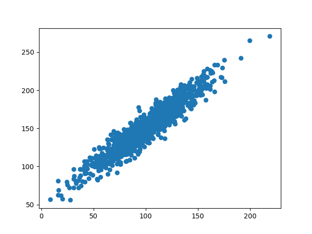
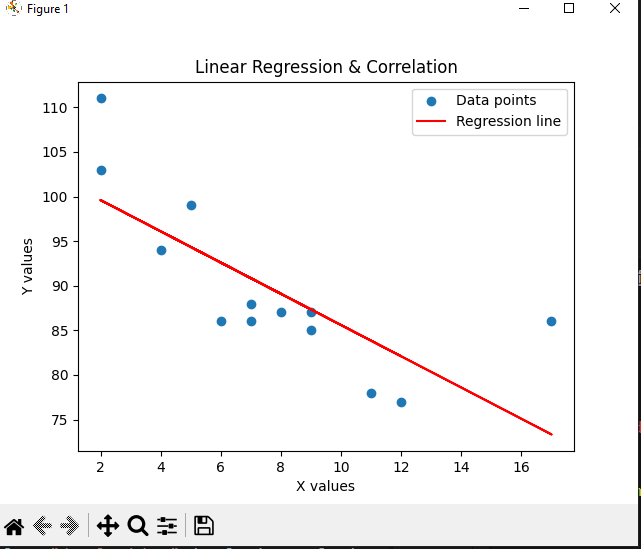

DevPortfolio
Home
Modules
Skills
GitHub
Back to Modules
Machine Learning April 2025 A
An exploration of modern web development practices, frameworks, and tools.
Learning Outcomes
Understand and apply modern HTML5 and CSS3 techniques to create responsive web layouts
Develop dynamic, interactive web applications using JavaScript and popular frameworks
Implement responsive design principles to ensure websites work across multiple devices
Apply accessibility best practices to make web content available to all users
Utilize modern build tools and deployment processes for web applications
Create and consume RESTful APIs to integrate web applications with backend services
Unit 1: Collaborative Discussion 1: The 4th Industrial Revolution
View More
Have a better understanding of the role of machine learning in industry.
Identify the skill sets required to become proficient in machine learning
Know about the factors impacting machine learning and ways to address it.
Understand the categories of machine learning.
Download Initial Post
Unit 2:Exploratory Data Analysis and Peer Response
View More
The steps involved with EDA.
Understanding the dataset through feature exploration.
How to spot anomalies within the dataset.
Visual analysis of the dataset.
Download Peer responses from Teammates
Download Peer responses to teammates
Unit 3: Correlation and Regression and Summary post
View More
Gain theoretical understanding of correlation and regression.
Understand how to compute correlation and regression.
Be able to apply these statistical techniques in real world scenario.
Covariance Results:

linear Regression Results:

Download python files
Download python files
Download python files
Download python files
Download Summary Post
Unit 4:Linear Regression with Scikit-Learn
View More
Gain theoretical understanding of correlation and regression.
Understand how to compute correlation and regression.
Be able to apply these statistical techniques in real world scenario.
E-portfolio Activity: Jaccard Coefficient Calculations
Python Files
Unit 5:Clustering
View More
This week we shall learn about:
Basic idea behind clustering.
Different techniques of distance measurements.
K-means and agglomerative clustering.
How to evaluate clusters.
On completion of this week, you will be able to:
Understand the logic which underpins clustering.
Identify skill sets required to evaluate the results of cluster analysis.
Understand the pitfalls of clustering techniques.
Unit 6:Clustering with Python,Team Project and Peer Review
View More
This week we shall learn about:
The functionalities of Python libraries used in the K-Means clustering algorithm.
Role of clustering algorithms in answering some interesting questions based on a dataset.
On completion of this week, you will be able to:
Undertake clustering analysis on large datasets.
Use right Python libraries for clustering.
Evaluate and interpret the results.
Assessment
Development Team Project: Project Report
EDA Open Data
Machine Learning Model Results
Peer Review
Peer Review: Project Report
Unit 7: Introduction to Artificial Neural Networks
View More
This week we shall learn about:
The functionalities of Python libraries used in the K-Means clustering algorithm.
Role of clustering algorithms in answering some interesting questions based on a dataset.
On completion of this week, you will be able to:
Undertake clustering analysis on large datasets.
Use right Python libraries for clustering.
Evaluate and interpret the results.
Unit 8: Training an Artificial Neural Network
View More
This week we shall learn about:
How the network learns from its mistake or error..
How backpropagation helps to adjust the neuron connection weights.
The application of ANN in real life scenarios.
On completion of this week, you will be able to:
Understand the error handling mechanism of ANN.
Design and develop more ANN artefacts.
Critique and contextualise emerging research in the area of ANN.